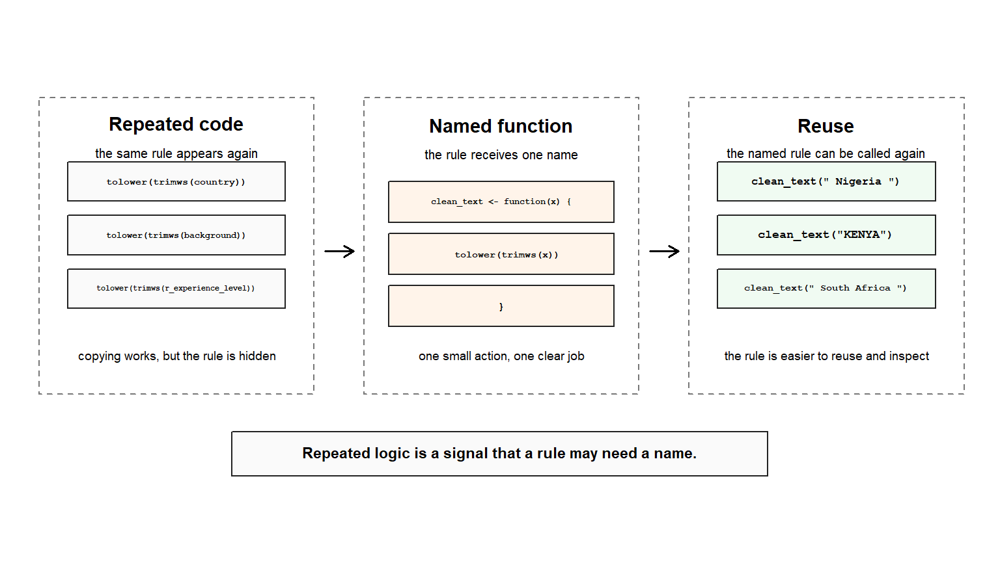

Code
project_scores <- c(72, 81, 65, 90)
mean(project_scores)
#> [1] 77
str(project_scores)
#> num [1:4] 72 81 65 90
tolower("Nigeria")
#> [1] "nigeria"
trimws(" Nigeria ")
#> [1] "Nigeria"Leo has learned to use R’s ready-made actions.
He can write code like this:
project_scores <- c(72, 81, 65, 90)
mean(project_scores)
#> [1] 77
str(project_scores)
#> num [1:4] 72 81 65 90
tolower("Nigeria")
#> [1] "nigeria"
trimws(" Nigeria ")
#> [1] "Nigeria"That is real progress. Leo can now recognise that functions are named actions with specific jobs. mean() summarises. str() inspects. tolower() changes text to lower case. trimws() removes extra spaces from the beginning and end of text.
Then repetition appears.
country <- " Nigeria "
background <- " Excel "
r_experience_level <- " Beginner "
country <- tolower(trimws(country))
background <- tolower(trimws(background))
r_experience_level <- tolower(trimws(r_experience_level))
country
#> [1] "nigeria"
background
#> [1] "excel"
r_experience_level
#> [1] "beginner"The code works.
But the pattern is uncomfortable. The same idea appears three times:
trim extra spaces and convert text to lower case.
Only the input changes.
This is one of the moments when working code begins to ask for better structure. The problem is not that Leo copied code while learning. Copying can help a beginner see a pattern. The problem is that repeated logic becomes harder to maintain as a project grows.
If Leo later improves the rule in one place but forgets another, the workflow begins to drift. If one copy contains a small mistake, that mistake hides inside a familiar-looking pattern.
A user-defined function gives the repeated rule a name.
Chapter 9 begins here, not with abstract programming theory, but with a practical signal: when the same action keeps appearing, the action may deserve a name.
In this chapter, Leo learns how to recognise repeated code, turn repeated logic into a small user-defined function, call that function, inspect its behaviour, add simple inputs, use simple defaults, and test small functions before trusting them.
It also prepares Leo for the final step of Part 2: debugging. Once he can name actions of his own, he also needs a method for understanding what happens when those actions fail.
Chapter 8 showed Leo that R already knows many actions.
Built-in functions gave him a working vocabulary: mean() can summarise values, length() can count them, str() can inspect structure, is.na() can check missingness, tolower() and trimws() can change text.
But Chapter 8 also created a new question:
What happens when the repeated action belongs to Leo’s own workflow?
R has tolower(). R has trimws(). But Leo may want one standard action that combines them into his own text-standardising rule.
R has /, sum(), length(), and mean(). But Leo may want one named action that calculates a rate in the same way every time.
This is where user-defined functions enter.
The new idea is not harder syntax for its own sake. It is preserved reasoning. Leo is learning to take a repeated rule from his work, give it a name, and make it reusable.
A function is not only something R provides. It can also be something the analyst defines.
That shift matters.
In Chapter 8, Leo used actions that already existed. In Chapter 9, he begins to create small actions that fit the logic of his own analysis.
A user-defined function is a named action Leo creates so that a repeated rule can be reused, inspected, and trusted.
The same idea can be seen as a movement from repetition to naming.
At first, Leo may copy the same cleaning pattern several times. That is not a moral failure. Copying can help a beginner notice the pattern. But when the same rule keeps appearing, the code is sending a signal: this idea may need one name.
The figure below shows that shift.

As shown in Figure fig-repetition-to-named-function, the function does not make the rule more mysterious. It makes the rule more visible. The repeated pattern tolower(trimws(...)) is now carried by the name clean_text().
This is the heart of Chapter 9. A user-defined function is not mainly about writing clever code. It is about preserving a small rule so it can be reused, inspected, and trusted.
A user-defined function is a function created by the user to perform a reusable action.
That definition is accurate, but it is not yet the full mental model.
A beginner often thinks a function is mainly about writing shorter code. Shorter code can be a benefit, but it is not the deepest reason functions matter. A function is also a way of naming thinking.
This repeated line:
tolower(trimws(country))contains a rule:
remove extra spaces, then convert text to lower caseWhen Leo turns that rule into a function, the code becomes easier to read:
clean_text <- function(x) {
tolower(trimws(x))
}
clean_text(" Nigeria ")
#> [1] "nigeria"The function name clean_text now carries meaning. In the same way, a name like completion_rate() or check_high_score() tells the reader what analytical rule is being applied. It tells the reader what the action is for.
This is the first major lesson of user-defined functions:
If a rule matters enough to repeat, it may matter enough to name.
At this stage, Leo should not try to turn every idea into a function.
A beginner function should usually do one clear thing: clean one kind of text, calculate one ratio, check one condition, or repeat one small rule. If a function becomes difficult to explain in one sentence, it may be trying to do too much.
That boundary protects the learner.
A good beginner function can often be described like this:
This function cleans text.
This function adds a bonus.
This function calculates a completion rate.
This function checks whether a score is high enough.A risky beginner function sounds like this:
This function cleans the data, fixes dates, removes duplicates,
calculates summaries, and prepares the final report.That second idea may belong to a workflow later. It is too large for a first user-defined function.
A useful early function should be small enough to test with one or two simple inputs.
A user-defined function has a recognisable shape:
name <- function(input) {
action
}The shape has four parts:
name = what Leo will call the action
input = what the function receives
body = what the function does
output = what comes backHere is a small function:
add_bonus <- function(score) {
score + 5
}The name is add_bonus.
The input is score.
The body is:
score + 5When the function is called, R runs the body using the value supplied for score. The final evaluated result becomes the returned output.
add_bonus(80)
#> [1] 85The input name inside the function does not need to match an existing object outside the function. It is a temporary name R uses while the function runs.
This function is small, but it teaches the structure. Leo has created an action that R did not already have under that name.
When Leo calls a user-defined function, R follows a simple path:
For add_bonus(80), R sees the name add_bonus, sends 80 into the function as score, runs score + 5, and returns 85.
That is enough theory for now. Leo does not need scoping theory, environments, or package-style function design in this chapter. He only needs the working model:
input → named action → outputBefore running the next function call, Leo should pause.
add_bonus <- function(score) {
score + 5
}Predict the result of each line:
add_bonus(80)
add_bonus(72)
add_bonus(0)Now run them.
add_bonus(80)
#> [1] 85
add_bonus(72)
#> [1] 77
add_bonus(0)
#> [1] 5The function applies the same rule each time. The input changes, but the action remains stable.
That is the value of naming a repeated rule.
Now return to the opening problem.
Leo had three separate text-cleaning lines:
country <- tolower(trimws(country))
background <- tolower(trimws(background))
r_experience_level <- tolower(trimws(r_experience_level))The rule is repeated. The input changes.
That means the rule can be named:
clean_text <- function(x) {
tolower(trimws(x))
}Now the repeated code becomes easier to read:
country <- clean_text(country)
background <- clean_text(background)
r_experience_level <- clean_text(r_experience_level)
country
#> [1] "nigeria"
background
#> [1] "excel"
r_experience_level
#> [1] "beginner"The function does not make the rule more mysterious. It makes the rule more visible.
A copied line remembers what Leo did once. A function preserves the reasoning so the same rule can be reused consistently.
A function is not trustworthy because it exists. It becomes trustworthy when its behaviour has been inspected.
Here is the first visible payoff.
Leo can apply the same cleaning rule to different values without rewriting the rule each time.
clean_text(" Nigeria ")
#> [1] "nigeria"
clean_text("KENYA")
#> [1] "kenya"
clean_text(" South Africa ")
#> [1] "south africa"The action is consistent. The inputs vary.
That is a small win, but it is not a small idea. This is the beginning of reusable workflow thinking.
The same principle can later help with variables from df_r_migration, such as country, background, completion_status, and r_experience_level. This chapter does not need to load the full dataset. The point is simpler: when the same text-standardising rule appears again and again, Leo can give it one name.
df_r_migration$country <- clean_text(df_r_migration$country)
df_r_migration$background <- clean_text(df_r_migration$background)
df_r_migration$completion_status <- clean_text(df_r_migration$completion_status)
df_r_migration$r_experience_level <- clean_text(df_r_migration$r_experience_level)The full cleaning workflow belongs later. For now, Leo is learning why a repeated rule should not be scattered across a script.
A user-defined function becomes easier to understand when Leo separates three questions.
What does the function receive?
What does the function do?
What does the function return?Take this function:
completion_rate <- function(completed) {
mean(completed, na.rm = TRUE)
}The input is completed.
The body calculates the mean of the logical values.
The output is a completion rate.
completion_status <- c(TRUE, TRUE, FALSE, TRUE, NA)
completion_rate(completion_status)
#> [1] 0.75In R, TRUE behaves like 1 and FALSE behaves like 0 in this kind of calculation. The function uses na.rm = TRUE so that a missing value does not block the result.
This function is still beginner-sized. It does one clear thing.
Before running the next call, predict what will happen.
clean_country <- function(country) {
tolower(trimws(country))
}What will this return?
clean_country(" Nigeria ")Run it.
clean_country(" Nigeria ")
#> [1] "nigeria"The leading and trailing spaces disappear, and the text becomes lower case.
Now test a few more inputs.
clean_country("KENYA")
#> [1] "kenya"
clean_country(" south africa ")
#> [1] "south africa"
clean_country(NA)
#> [1] NAThe NA remains NA. That is useful. The function does not pretend that a missing value is real text.
This is another inspection habit: do not only test the clean-looking case. Test the edge case that may appear in real data.
A function should be tested before it becomes part of a workflow.
Testing does not have to be advanced at this stage. Leo can begin with a simple checklist:
Does the function work on a normal input?
Does it work on a second normal input?
Does it behave sensibly with missing input?
Does the output look like the kind of result I expected?For clean_text(), the tests are simple:
clean_text(" Nigeria ")
#> [1] "nigeria"
clean_text("KENYA")
#> [1] "kenya"
clean_text(" South Africa ")
#> [1] "south africa"
clean_text(NA)
#> [1] NAFor add_bonus(), the tests are also simple:
add_bonus(80)
#> [1] 85
add_bonus(0)
#> [1] 5
add_bonus(-5)
#> [1] 0The last input is not a recommendation about negative scores. It is a reminder that tests help Leo notice assumptions. If a negative score should not be allowed, that becomes a design decision. It should not be hidden.
Calling a function is not the end of the work. A reliable analyst checks what came back.
Some functions need a small guardrail.
Suppose Leo wants a function that calculates an average score, but only when the input is numeric. A simple check can make the function safer.
safe_mean <- function(x) {
if (!is.numeric(x)) {
stop("safe_mean() expects numeric input.")
}
mean(x, na.rm = TRUE)
}Now the normal case works:
safe_mean(c(72, 81, NA, 90))
#> [1] 81The function says its expectation clearly: the input should be numeric.
A non-numeric example should not be run accidentally in a rendered chapter unless it is marked as an intentional error. So here is the idea as display-only code:
safe_mean(c("72", "81", "90"))
# Error: safe_mean() expects numeric input.The input check is simple. The error is intentional because the function is protecting the workflow from the wrong kind of input. It does not turn Leo into a software engineer. It only makes the function honest about what it expects.
Use checks sparingly at this stage. A function with too many checks can become harder to read than the problem it was meant to solve.
User-defined functions give Leo more control, but they also give him more responsibility.
When Leo uses mean() incorrectly, the problem belongs to how he called a function R already knows. When he writes safe_mean() himself, the question becomes wider:
Did I give the function the right input?
Did I name the argument clearly?
Did I assume the input would always be numeric?
Did I test the unusual case?
Did the function fail because of the call, or because of the function body?This is not a reason to avoid user-defined functions. It is the reason to write them carefully.
A function is useful because it hides repeated detail behind a name. But if Leo hides too much too early, he may also hide the source of a problem. That is why small functions are easier to test, easier to explain, and easier to repair.
A function names a repeated action. Debugging asks what happened when that named action did not behave as expected.
A common beginner mistake is to create one large function that tries to solve an entire project.
That usually happens for a reasonable reason. Leo wants the script to feel tidy. He thinks putting many lines into one function will make the work cleaner.
But a function that does too many things becomes difficult to inspect.
Consider this display-only sketch:
prepare_everything <- function(data) {
# clean text
# fix dates
# remove duplicates
# calculate new variables
# summarise results
# export report
}The name is vague, and the responsibilities are too many.
A better beginner habit is to name one small rule at a time:
clean_text()
calculate_completion_rate()
check_high_score()Small functions are easier to test. They are also easier to replace when the rule changes.
The point is not to write many functions for the sake of writing functions. The point is to name repeated reasoning clearly.
Leo first writes this:
clean_learner_record <- function(country, background, r_experience_level) {
country <- tolower(trimws(country))
background <- tolower(trimws(background))
r_experience_level <- tolower(trimws(r_experience_level))
list(country, background, r_experience_level)
}The function works, but it is already doing several things at once. It cleans three inputs and then pastes them together. That may be more than Leo needs.
He steps back and asks a better question:
What is the repeated rule?
The repeated rule is not “prepare a learner record.” It is:
standardise one piece of textSo he keeps the smaller function:
standardise_text <- function(x) {
tolower(trimws(x))
}
standardise_text(" Beginner ")
#> [1] "beginner"That is the repair. Leo has not failed. He has made the function smaller until its purpose is clear.
Some functions need a setting that has a common value but can still be changed.
A default argument gives the function a normal setting.
add_bonus <- function(score, bonus = 5) {
score + bonus
}Now Leo can omit the second argument and use the default:
add_bonus(80)
#> [1] 85Or he can choose a different bonus:
add_bonus(80, bonus = 10)
#> [1] 90The default should match the usual case. The named argument makes the unusual case clear.
This is another place where functions protect meaning. The code says what changed.
A function name should help the reader understand the action.
These names are helpful:
clean_text()
add_bonus()
completion_rate()
safe_mean()These names are weak:
do_it()
fix_stuff()
my_function()
thing()A good function name is not decorative. It is part of the explanation.
When Leo reads completion_rate(completion_status), he can infer the intention before he studies the body. That is what clear names do.
This defines a function:
double_score <- function(score) {
score * 2
}But nothing has happened to a real score yet.
To use the function, Leo must call it:
double_score(40)
#> [1] 80Defining is not the same as running.
This function depends on an object outside the function:
bonus <- 5
add_bonus_badly <- function(score) {
score + bonus
}It may work while bonus exists. But the function is less clear because the input is not fully visible.
A clearer version receives the bonus directly:
add_bonus_clearly <- function(score, bonus = 5) {
score + bonus
}
add_bonus_clearly(80)
#> [1] 85This is not a full lesson on environments. It is a beginner rule of clarity: important inputs should usually be visible in the function definition.
A function that cleans text, calculates rates, creates summaries, and exports a file is probably too large for this stage.
A beginner function should usually do one clear thing. If the purpose cannot be explained in one sentence, split the idea.
A function can return a result that looks plausible but is not what Leo intended.
So Leo should test small cases first:
completion_rate(c(TRUE, FALSE, TRUE))
#> [1] 0.6666667
completion_rate(c(TRUE, NA, TRUE))
#> [1] 1A function is part of analysis only after its behaviour has been checked.
At this point, Leo is not expected to design software systems or write complex function libraries.
He is expected to understand that:
Leo is not expected to understand advanced scoping, package development, recursive functions, object-oriented programming, formal testing frameworks, or functional programming tools. Those belong later.
He is also not expected to diagnose every error message in this chapter. For now, the goal is small, readable functions that preserve repeated reasoning and can be tested before they are trusted. Chapter 10 will turn that testing habit into a fuller debugging framework.
Before running the code, predict the result.
completion_rate <- function(completed) {
mean(completed, na.rm = TRUE)
}
completion_rate(c(TRUE, TRUE, FALSE, NA))
#> [1] 0.6666667Now explain the result in one sentence.
Look at the repeated pattern:
tolower(trimws(" Nigeria "))
tolower(trimws("KENYA"))
tolower(trimws(" South Africa "))Write a function called clean_text() that names the rule.
After writing clean_text(), test it with:
clean_text(" Nigeria ")
clean_text("KENYA")
clean_text(NA)Write down what each result tells you.
Explain why this is too much for one beginner function:
prepare_report <- function(data) {
# import data
# clean text
# fix dates
# remove duplicates
# summarise results
# make charts
}Then write one smaller function name that would be easier to test.
By the end of this chapter, Leo should be able to:
These are not software-engineering skills in disguise. They are practical analysis skills. Leo is learning to keep repeated reasoning in one place, give it a meaningful name, and check whether it behaves as expected.
Part 2 has not finished yet, but Leo has reached an important threshold.
Chapter 6 showed him that R code has structure. Code is not a pile of symbols. It must be arranged in ways R can read.
Chapter 7 showed him that R can make judgments. Comparisons, logical values, and conditions allow code to ask careful questions.
Chapter 8 showed him that R already knows many actions. Built-in functions gave Leo a vocabulary of named work: inspect, count, summarise, convert, check, format, and clean.
Chapter 9 has added one more layer. Leo can now create small named actions of his own.
The movement now looks like this:
Chapter 6: R reads structured code.
Chapter 7: R makes and combines judgments.
Chapter 8: R performs ready-made actions.
Chapter 9: Leo creates small named actions of his own.
Chapter 10: Leo learns how to diagnose what went wrong.That final line matters. A user-defined function gives Leo more power, but it also gives him more responsibility. When a function fails, he can no longer treat the problem as a mysterious event outside his control. He must learn how to read what R says, trace where the problem began, and test the assumptions hidden inside the code.
This is not a new topic dropped into the book. It is the natural consequence of writing code that belongs to Leo.
A function is not reliable because it has a name. It becomes reliable when Leo can explain its input, inspect its output, and test what happens when the input is not quite what he expected.
Leo has learned to name repeated thinking.
That changes his relationship with R. He is no longer only calling actions that already exist. He is beginning to create actions that carry his own assumptions.
This is powerful, but it also raises a new question:
What should Leo do when the code he wrote does not behave the way he expected?
That question belongs to Chapter 10.
The next chapter teaches Leo how to read errors without panic, trace problems carefully, test small pieces of code, and repair the conversation between his intention and R’s response. Only after that final Part 2 skill will he be ready to move into the larger workflows of Part 3.